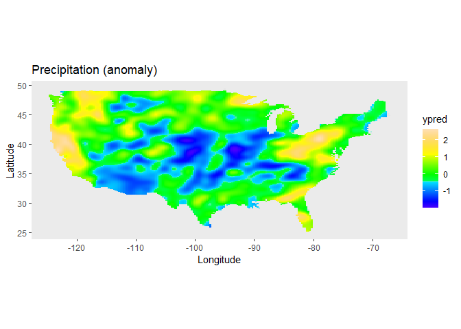

The aim of the LMMsolver package is to provide an efficient and flexible system to estimate variance components using restricted maximum likelihood or REML (Patterson and Thompson 1971), for models where the mixed model equations are sparse. An example of an application is using splines to model spatial (Rodríguez-Álvarez et al. 2018; Boer, Piepho, and Williams 2020) or temporal (Bustos-Korts et al. 2019) trends. Another example is mixed model Quantitative Trait Locus (QTL) analysis for multiparental populations, allowing for heterogeneous residual variance and design matrices with Identity-By-Descent (IBD) probabilities (Li et al. 2021).
Installation
- Install from CRAN:
install.packages("LMMsolver")- Install latest development version from GitHub (requires remotes package):
remotes::install_github("Biometris/LMMsolver", ref = "develop", dependencies = TRUE)Example
As an example of the functionality of the package we use a model defined in Rodríguez-Álvarez et al. (2015). It uses the USprecip data set in the spam package (Furrer and Sain 2010).
library(LMMsolver)
library(ggplot2)
## Get precipitation data from spam
data(USprecip, package = "spam")
## Only use observed data.
USprecip <- as.data.frame(USprecip)
USprecip <- USprecip[USprecip$infill == 1, ]A two-dimensional P-spline can be defined with the spl2D() function, with longitude and latitude as covariates. The number of segments chosen here is equal to the number of segments used in Rodríguez-Álvarez et al. (2015).
obj1 <- LMMsolve(fixed = anomaly ~ 1,
spline = ~spl2D(x1 = lon, x2 = lat, nseg = c(41, 41)),
data = USprecip)The summary function gives a table with the effective dimensions and the penalty parameters:
summary(obj1)
#> Table with effective dimensions and penalties:
#>
#> Term Effective Model Nominal Ratio Penalty
#> (Intercept) 1.00 1 1 1.00 0.00
#> lin(lon, lat) 3.00 3 3 1.00 0.00
#> s(lon) 302.60 1936 1932 0.16 0.26
#> s(lat) 409.09 1936 1932 0.21 0.08
#> residual 5190.31 5906 5902 0.88 13.53
#>
#> Total Effective Dimension: 5906The spatial trend for the precipitation can now be plotted on the map of the USA.
plotDat <- obtainSmoothTrend(obj1, grid = c(200, 300), includeIntercept = TRUE)
usa = maps::map("usa", regions = "main", plot = FALSE)
v <- sp::point.in.polygon(plotDat$lon, plotDat$lat, usa$x, usa$y)
plotDat <- plotDat[v == 1, ]
ggplot(plotDat, aes(x = lon, y = lat, fill = ypred)) +
geom_tile(show.legend = TRUE) +
scale_fill_gradientn(colors = topo.colors(100))+
labs(title = "Precipitation (anomaly) US April 1948", x = "Longitude", y = "Latitude") +
coord_fixed() +
theme(panel.grid = element_blank())
Further examples can be found in the vignette.
vignette("Solving_Linear_Mixed_Models")